12. Clustering¶
Chinese proverb
Sharpening the knife longer can make it easier to hack the firewood – old Chinese proverb
The above figure was generated by the code from: Python Data Science Handbook.
12.1. K-Means Model¶
12.1.1. Introduction¶
k-means clustering is a method of vector quantization, originally from signal processing, that is popular for cluster analysis in data mining. The approach k-means follows to solve the problem is called Expectation-Maximization. It can be described as follows:
Assign some cluter centers
Repeated until converged
E-Step: assign points to the nearest center
M-step: set the cluster center to the mean
Given a set of observations 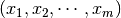. The objective function is
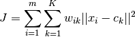
where 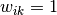 if  is in cluster
is in cluster  ; otherwise 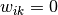 and 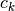 is the centroid of ‘s cluster.
; otherwise 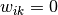 and 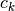 is the centroid of ‘s cluster.
Mathematically, k-means is a minimization problem with two parts: First, we minimize  w.r.t 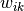 with fixed; Then minimize w.r.t with fixed. i.e.
w.r.t 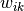 with fixed; Then minimize w.r.t with fixed. i.e.
E-step:
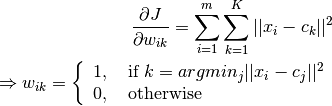
M-step:
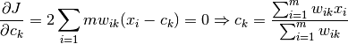
12.1.2. Demo¶
Set up spark context and SparkSession
from pyspark.sql import SparkSession
spark = SparkSession \
.builder \
.appName("Python Spark K-means example") \
.config("spark.some.config.option", "some-value") \
.getOrCreate()
Load dataset
df = spark.read.format('com.databricks.spark.csv').\
options(header='true', \
inferschema='true').\
load("../data/iris.csv",header=True);
check the data set
df.show(5,True)
df.printSchema()
Then you will get
+------------+-----------+------------+-----------+-------+
|sepal_length|sepal_width|petal_length|petal_width|species|
+------------+-----------+------------+-----------+-------+
| 5.1| 3.5| 1.4| 0.2| setosa|
| 4.9| 3.0| 1.4| 0.2| setosa|
| 4.7| 3.2| 1.3| 0.2| setosa|
| 4.6| 3.1| 1.5| 0.2| setosa|
| 5.0| 3.6| 1.4| 0.2| setosa|
+------------+-----------+------------+-----------+-------+
only showing top 5 rows
root
|-- sepal_length: double (nullable = true)
|-- sepal_width: double (nullable = true)
|-- petal_length: double (nullable = true)
|-- petal_width: double (nullable = true)
|-- species: string (nullable = true)
You can also get the Statistical resutls from the data frame (Unfortunately, it only works for numerical).
df.describe().show()
Then you will get
+-------+------------------+-------------------+------------------+------------------+---------+
|summary| sepal_length| sepal_width| petal_length| petal_width| species|
+-------+------------------+-------------------+------------------+------------------+---------+
| count| 150| 150| 150| 150| 150|
| mean| 5.843333333333335| 3.0540000000000007|3.7586666666666693|1.1986666666666672| null|
| stddev|0.8280661279778637|0.43359431136217375| 1.764420419952262|0.7631607417008414| null|
| min| 4.3| 2.0| 1.0| 0.1| setosa|
| max| 7.9| 4.4| 6.9| 2.5|virginica|
+-------+------------------+-------------------+------------------+------------------+---------+
Convert the data to dense vector (features)
# convert the data to dense vector
from pyspark.mllib.linalg import Vectors
def transData(data):
return data.rdd.map(lambda r: [Vectors.dense(r[:-1])]).toDF(['features'])
Note
You are strongly encouraged to try my
get_dummyfunction for dealing with the categorical data in complex dataset.Supervised learning version:
def get_dummy(df,indexCol,categoricalCols,continuousCols,labelCol): from pyspark.ml import Pipeline from pyspark.ml.feature import StringIndexer, OneHotEncoder, VectorAssembler from pyspark.sql.functions import col indexers = [ StringIndexer(inputCol=c, outputCol="{0}_indexed".format(c)) for c in categoricalCols ] # default setting: dropLast=True encoders = [ OneHotEncoder(inputCol=indexer.getOutputCol(), outputCol="{0}_encoded".format(indexer.getOutputCol())) for indexer in indexers ] assembler = VectorAssembler(inputCols=[encoder.getOutputCol() for encoder in encoders] + continuousCols, outputCol="features") pipeline = Pipeline(stages=indexers + encoders + [assembler]) model=pipeline.fit(df) data = model.transform(df) data = data.withColumn('label',col(labelCol)) return data.select(indexCol,'features','label')Unsupervised learning version:
def get_dummy(df,indexCol,categoricalCols,continuousCols): ''' Get dummy variables and concat with continuous variables for unsupervised learning. :param df: the dataframe :param categoricalCols: the name list of the categorical data :param continuousCols: the name list of the numerical data :return k: feature matrix :author: Wenqiang Feng :email: von198@gmail.com ''' indexers = [ StringIndexer(inputCol=c, outputCol="{0}_indexed".format(c)) for c in categoricalCols ] # default setting: dropLast=True encoders = [ OneHotEncoder(inputCol=indexer.getOutputCol(), outputCol="{0}_encoded".format(indexer.getOutputCol())) for indexer in indexers ] assembler = VectorAssembler(inputCols=[encoder.getOutputCol() for encoder in encoders] + continuousCols, outputCol="features") pipeline = Pipeline(stages=indexers + encoders + [assembler]) model=pipeline.fit(df) data = model.transform(df) return data.select(indexCol,'features')
Two in one:
def get_dummy(df,indexCol,categoricalCols,continuousCols,labelCol,dropLast=False): ''' Get dummy variables and concat with continuous variables for ml modeling. :param df: the dataframe :param categoricalCols: the name list of the categorical data :param continuousCols: the name list of the numerical data :param labelCol: the name of label column :param dropLast: the flag of drop last column :return: feature matrix :author: Wenqiang Feng :email: von198@gmail.com >>> df = spark.createDataFrame([ (0, "a"), (1, "b"), (2, "c"), (3, "a"), (4, "a"), (5, "c") ], ["id", "category"]) >>> indexCol = 'id' >>> categoricalCols = ['category'] >>> continuousCols = [] >>> labelCol = [] >>> mat = get_dummy(df,indexCol,categoricalCols,continuousCols,labelCol) >>> mat.show() >>> +---+-------------+ | id| features| +---+-------------+ | 0|[1.0,0.0,0.0]| | 1|[0.0,0.0,1.0]| | 2|[0.0,1.0,0.0]| | 3|[1.0,0.0,0.0]| | 4|[1.0,0.0,0.0]| | 5|[0.0,1.0,0.0]| +---+-------------+ ''' from pyspark.ml import Pipeline from pyspark.ml.feature import StringIndexer, OneHotEncoder, VectorAssembler from pyspark.sql.functions import col indexers = [ StringIndexer(inputCol=c, outputCol="{0}_indexed".format(c)) for c in categoricalCols ] # default setting: dropLast=True encoders = [ OneHotEncoder(inputCol=indexer.getOutputCol(), outputCol="{0}_encoded".format(indexer.getOutputCol()),dropLast=dropLast) for indexer in indexers ] assembler = VectorAssembler(inputCols=[encoder.getOutputCol() for encoder in encoders] + continuousCols, outputCol="features") pipeline = Pipeline(stages=indexers + encoders + [assembler]) model=pipeline.fit(df) data = model.transform(df) if indexCol and labelCol: # for supervised learning data = data.withColumn('label',col(labelCol)) return data.select(indexCol,'features','label') elif not indexCol and labelCol: # for supervised learning data = data.withColumn('label',col(labelCol)) return data.select('features','label') elif indexCol and not labelCol: # for unsupervised learning return data.select(indexCol,'features') elif not indexCol and not labelCol: # for unsupervised learning return data.select('features')
Transform the dataset to DataFrame
transformed= transData(df)
transformed.show(5, False)
+-----------------+
|features |
+-----------------+
|[5.1,3.5,1.4,0.2]|
|[4.9,3.0,1.4,0.2]|
|[4.7,3.2,1.3,0.2]|
|[4.6,3.1,1.5,0.2]|
|[5.0,3.6,1.4,0.2]|
+-----------------+
only showing top 5 rows
Deal With Categorical Variables
from pyspark.ml import Pipeline
from pyspark.ml.regression import LinearRegression
from pyspark.ml.feature import VectorIndexer
from pyspark.ml.evaluation import RegressionEvaluator
# Automatically identify categorical features, and index them.
# We specify maxCategories so features with > 4 distinct values are treated as continuous.
featureIndexer = VectorIndexer(inputCol="features", \
outputCol="indexedFeatures",\
maxCategories=4).fit(transformed)
data = featureIndexer.transform(transformed)
Now you check your dataset with
data.show(5,True)
you will get
+-----------------+-----------------+
| features| indexedFeatures|
+-----------------+-----------------+
|[5.1,3.5,1.4,0.2]|[5.1,3.5,1.4,0.2]|
|[4.9,3.0,1.4,0.2]|[4.9,3.0,1.4,0.2]|
|[4.7,3.2,1.3,0.2]|[4.7,3.2,1.3,0.2]|
|[4.6,3.1,1.5,0.2]|[4.6,3.1,1.5,0.2]|
|[5.0,3.6,1.4,0.2]|[5.0,3.6,1.4,0.2]|
+-----------------+-----------------+
only showing top 5 rows
Note
Since clustering algorithms including k-means use distance-based measurements to determine the similarity between data points, It’s strongly recommended to standardize the data to have a mean of zero and a standard deviation of one.
Elbow method to determine the optimal number of clusters for k-means clustering
import numpy as np
cost = np.zeros(20)
for k in range(2,20):
kmeans = KMeans()\
.setK(k)\
.setSeed(1) \
.setFeaturesCol("indexedFeatures")\
.setPredictionCol("cluster")
model = kmeans.fit(data)
cost[k] = model.computeCost(data) # requires Spark 2.0 or later
import numpy as np
import matplotlib.mlab as mlab
import matplotlib.pyplot as plt
import seaborn as sbs
from matplotlib.ticker import MaxNLocator
fig, ax = plt.subplots(1,1, figsize =(8,6))
ax.plot(range(2,20),cost[2:20])
ax.set_xlabel('k')
ax.set_ylabel('cost')
ax.xaxis.set_major_locator(MaxNLocator(integer=True))
plt.show()

In my opinion, sometimes it’s hard to choose the optimal number of the clusters by using the elbow method. As shown in the following Figure, you can choose 3, 5 or even 8. I will choose 3 in this demo.

Silhouette analysis
#PySpark libraries
from pyspark.ml import Pipeline
from pyspark.ml.feature import StringIndexer, OneHotEncoder, VectorAssembler
from pyspark.sql.functions import col, percent_rank, lit
from pyspark.sql.window import Window
from pyspark.sql import DataFrame, Row
from pyspark.sql.types import StructType
from functools import reduce # For Python 3.x
from pyspark.ml.clustering import KMeans
from pyspark.ml.evaluation import ClusteringEvaluator
def optimal_k(df_in,index_col,k_min, k_max,num_runs):
'''
Determine optimal number of clusters by using Silhoutte Score Analysis.
:param df_in: the input dataframe
:param index_col: the name of the index column
:param k_min: the minmum number of the clusters
:param k_max: the maxmum number of the clusters
:param num_runs: the number of runs for each fixed clusters
:return k: optimal number of the clusters
:return silh_lst: Silhouette score
:return r_table: the running results table
:author: Wenqiang Feng
:email: von198@gmail.com
'''
start = time.time()
silh_lst = []
k_lst = np.arange(k_min, k_max+1)
r_table = df_in.select(index_col).toPandas()
r_table = r_table.set_index(index_col)
centers = pd.DataFrame()
for k in k_lst:
silh_val = []
for run in np.arange(1, num_runs+1):
# Trains a k-means model.
kmeans = KMeans()\
.setK(k)\
.setSeed(int(np.random.randint(100, size=1)))
model = kmeans.fit(df_in)
# Make predictions
predictions = model.transform(df_in)
r_table['cluster_{k}_{run}'.format(k=k, run=run)]= predictions.select('prediction').toPandas()
# Evaluate clustering by computing Silhouette score
evaluator = ClusteringEvaluator()
silhouette = evaluator.evaluate(predictions)
silh_val.append(silhouette)
silh_array=np.asanyarray(silh_val)
silh_lst.append(silh_array.mean())
elapsed = time.time() - start
silhouette = pd.DataFrame(list(zip(k_lst,silh_lst)),columns = ['k', 'silhouette'])
print('+------------------------------------------------------------+')
print("| The finding optimal k phase took %8.0f s. |" %(elapsed))
print('+------------------------------------------------------------+')
return k_lst[np.argmax(silh_lst, axis=0)], silhouette , r_table
k, silh_lst, r_table = optimal_k(scaledData,index_col,k_min, k_max,num_runs)
+------------------------------------------------------------+
| The finding optimal k phase took 1783 s. |
+------------------------------------------------------------+
spark.createDataFrame(silh_lst).show()
+---+------------------+
| k| silhouette|
+---+------------------+
| 3|0.8045154385557953|
| 4|0.6993528775512052|
| 5|0.6689286654221447|
| 6|0.6356184024841809|
| 7|0.7174102265711756|
| 8|0.6720861758298997|
| 9| 0.601771359881241|
| 10|0.6292447334578428|
+---+------------------+
From the silhouette list, we can choose 3 as the optimal number of the clusters.
Warning
ClusteringEvaluator in pyspark.ml.evaluation requires Spark 2.4 or later!!
Pipeline Architecture
from pyspark.ml.clustering import KMeans, KMeansModel
kmeans = KMeans() \
.setK(3) \
.setFeaturesCol("indexedFeatures")\
.setPredictionCol("cluster")
# Chain indexer and tree in a Pipeline
pipeline = Pipeline(stages=[featureIndexer, kmeans])
model = pipeline.fit(transformed)
cluster = model.transform(transformed)
k-means clusters
cluster = model.transform(transformed)
+-----------------+-----------------+-------+
| features| indexedFeatures|cluster|
+-----------------+-----------------+-------+
|[5.1,3.5,1.4,0.2]|[5.1,3.5,1.4,0.2]| 1|
|[4.9,3.0,1.4,0.2]|[4.9,3.0,1.4,0.2]| 1|
|[4.7,3.2,1.3,0.2]|[4.7,3.2,1.3,0.2]| 1|
|[4.6,3.1,1.5,0.2]|[4.6,3.1,1.5,0.2]| 1|
|[5.0,3.6,1.4,0.2]|[5.0,3.6,1.4,0.2]| 1|
|[5.4,3.9,1.7,0.4]|[5.4,3.9,1.7,0.4]| 1|
|[4.6,3.4,1.4,0.3]|[4.6,3.4,1.4,0.3]| 1|
|[5.0,3.4,1.5,0.2]|[5.0,3.4,1.5,0.2]| 1|
|[4.4,2.9,1.4,0.2]|[4.4,2.9,1.4,0.2]| 1|
|[4.9,3.1,1.5,0.1]|[4.9,3.1,1.5,0.1]| 1|
|[5.4,3.7,1.5,0.2]|[5.4,3.7,1.5,0.2]| 1|
|[4.8,3.4,1.6,0.2]|[4.8,3.4,1.6,0.2]| 1|
|[4.8,3.0,1.4,0.1]|[4.8,3.0,1.4,0.1]| 1|
|[4.3,3.0,1.1,0.1]|[4.3,3.0,1.1,0.1]| 1|
|[5.8,4.0,1.2,0.2]|[5.8,4.0,1.2,0.2]| 1|
|[5.7,4.4,1.5,0.4]|[5.7,4.4,1.5,0.4]| 1|
|[5.4,3.9,1.3,0.4]|[5.4,3.9,1.3,0.4]| 1|
|[5.1,3.5,1.4,0.3]|[5.1,3.5,1.4,0.3]| 1|
|[5.7,3.8,1.7,0.3]|[5.7,3.8,1.7,0.3]| 1|
|[5.1,3.8,1.5,0.3]|[5.1,3.8,1.5,0.3]| 1|
+-----------------+-----------------+-------+
only showing top 20 rows